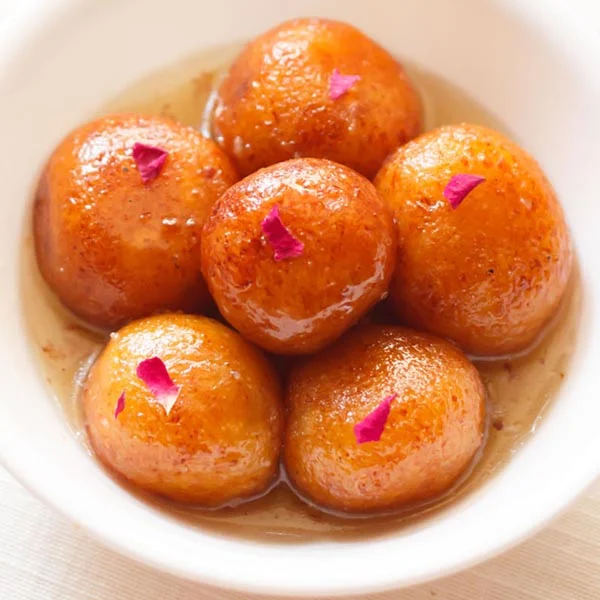

Gulab Jamun
HOME

Gulab jamun is a popular South Asian dessert, particularly in India, Pakistan, Nepal, and Bangladesh.
It consists of deep-fried balls made from milk solids (traditionally khoya, but often using dried or powdered milk in modern recipes) and flour, then soaked in a fragrant sugar syrup flavored with cardamom and rose water or kewra.
The name "Gulab Jamun" translates to "rose berry," with "gulab" referring to the rose-water scented syrup and "jamun" to a type of berry.
These soft, spongy, and sweet balls are a beloved treat, often enjoyed during festivals and celebrations.
Ingrediants
- milk powder
- flour
- baking powder
- ghee (or butter)
- milk
Steps to Prepare Gulab Jamun
- Combine sugar and water in a pan and bring to a boil to create the syrup. Remove from heat, add cardamom, and set aside to cool.
- In a mixing bowl, combine flour, paneer, sooji, Nestlé MILKMAID, baking powder, and baking soda. Mix gently to form a soft dough, avoiding over-kneading.
- Divide the dough into 30-35 portions and gently shape them into round balls.
- Heat oil on low flame and fry the balls until they turn golden brown.
- Transfer the fried Gulab Jamuns into the cooled sugar syrup. Once all the Gulab Jamuns are added, bring the syrup to a boil again briefly, then remove from heat.
- Enjoy your homemade Gulab Jamun warm, garnished with your favourite toppings.